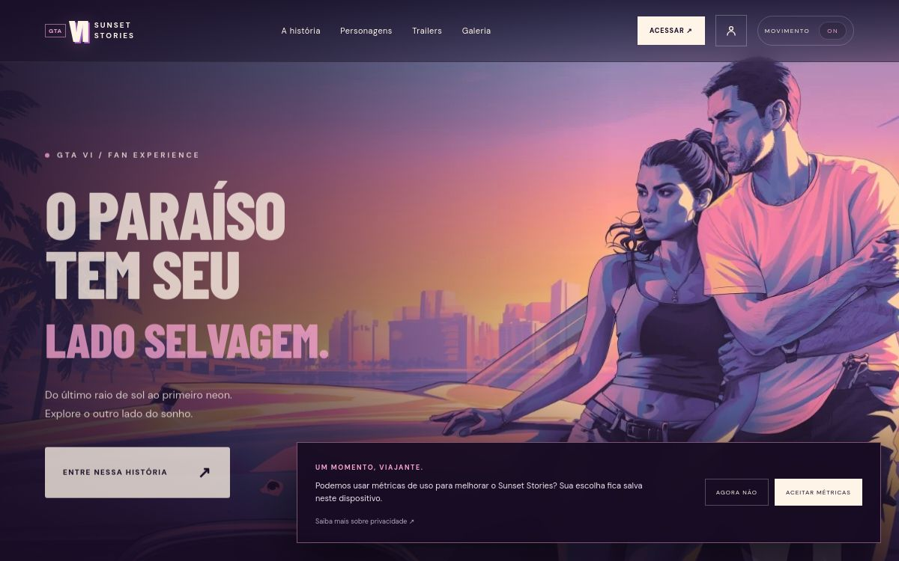
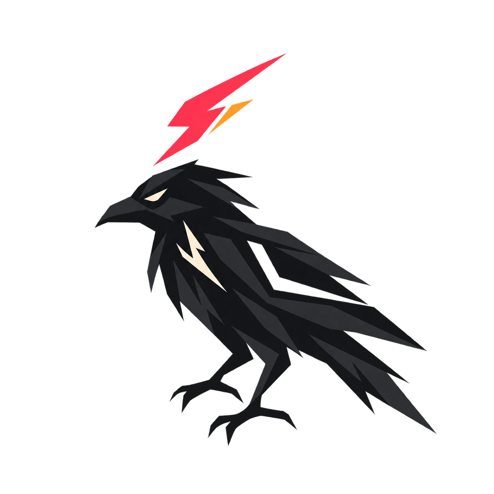
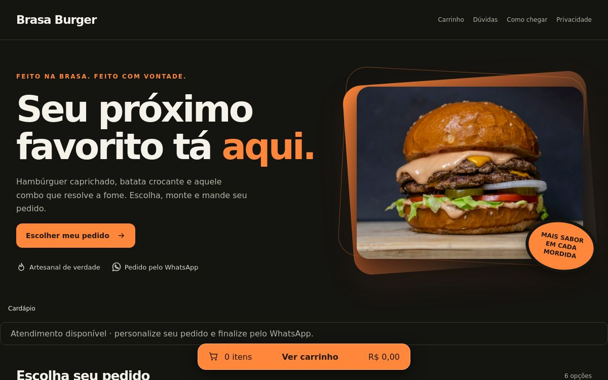
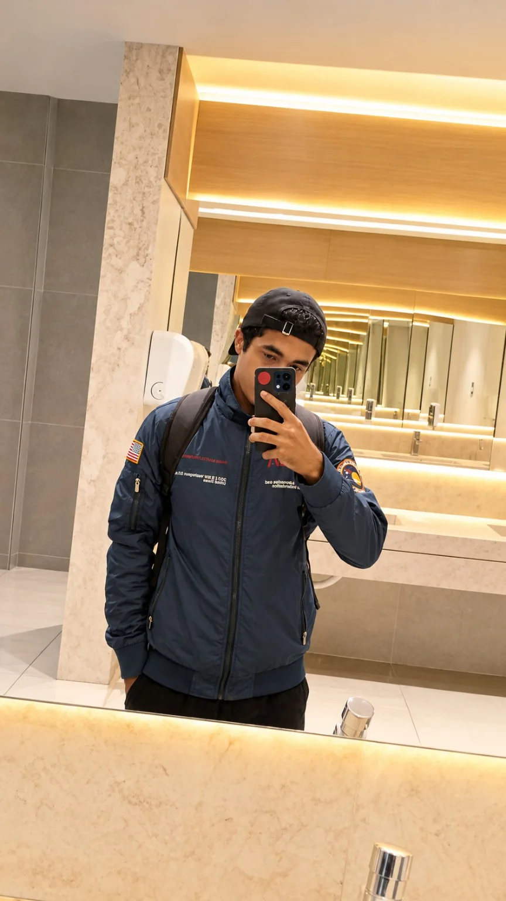
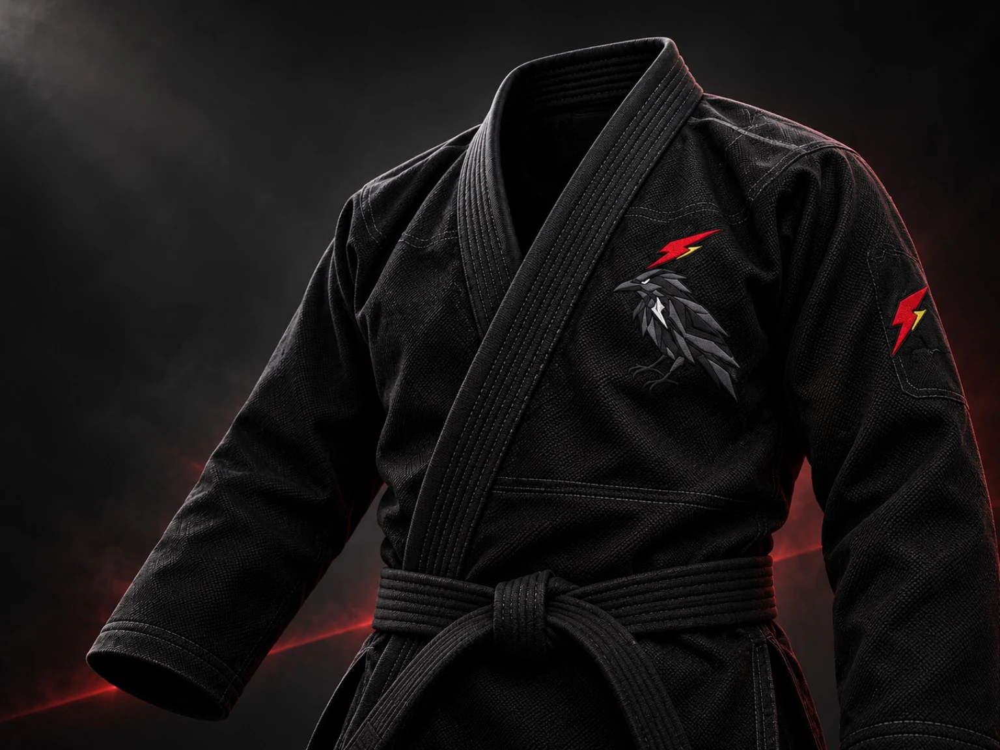
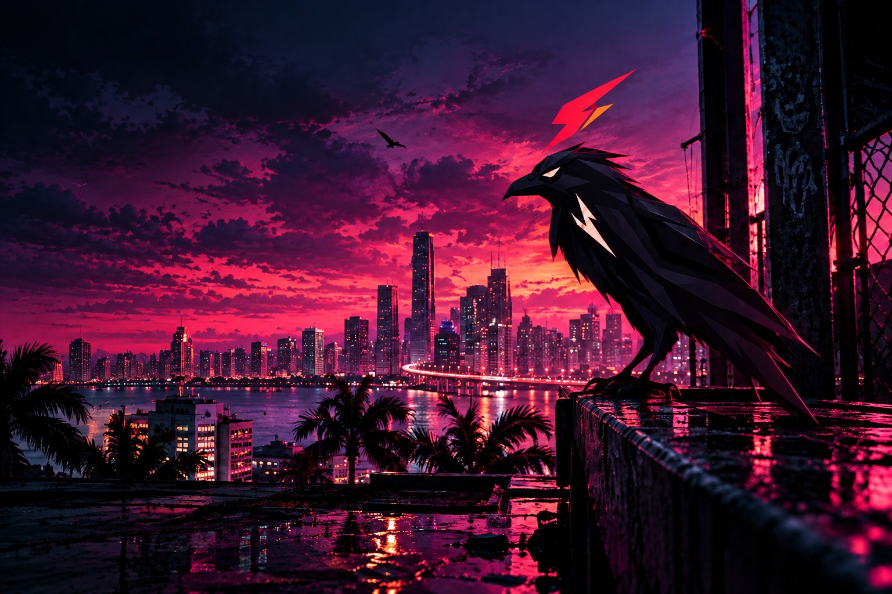
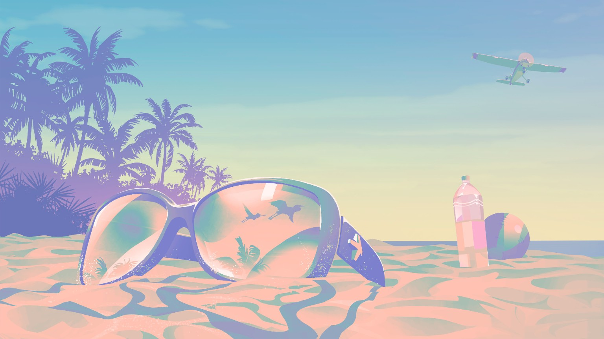

PROJETO EM DESTAQUE 01 / 02Sunset
Sunset
Stories
Uma galeria autoral de Vice City, com navegação por cenas, acesso de usuários e gestão de conteúdo.
Ver projeto →
Abrir projeto ↗
NOX VESPERVICE CITY · 02:17 AMDESENVOLVEDOR FULLSTACK
Interfaces, sistemas e experiências digitais
com atenção a detalhe e desempenho.
TRABALHOS RECENTES
Interfaces e sistemas desenvolvidos para uso real,
com cuidado visual e atenção ao desempenho.
Uma galeria autoral de Vice City, com navegação por cenas, acesso de usuários e gestão de conteúdo.
Ver projeto →
Abrir projeto ↗
Abrir projeto ↗Cardápio digital para explorar produtos, revisar o pedido e seguir para a finalização pelo WhatsApp.
HABILIDADES
Desenvolvimento de interfaces, sistemas e experiências digitais com atenção a performance e usabilidade.
Interfaces modernas, responsivas e acessíveis para diferentes telas.
Estrutura de dados, integrações e regras de negócio para aplicações web.
Direção visual e movimento aplicados à identidade de cada projeto.
TECNOLOGIAS
Ferramentas que utilizo e estudo.
MEU PROCESSO
Etapas claras, da ideia à entrega.

SOBRE MIM
Sou Lucas Neves, estudante de Análise e Desenvolvimento de Sistemas. Desenvolvo aplicações web e interfaces, explorando frontend, backend e experiências interativas.
Nos meus projetos, junto organização de código, usabilidade e direção visual — da estrutura ao acabamento da interface.
FORA DO EDITOR
Referências e interesses que atravessam meu dia a dia e aparecem, de um jeito ou de outro, no que crio.



A IDENTIDADE
O corvo geométrico e o raio vermelho e laranja formam a assinatura visual de Nox Vesper. A marca combina contraste, presença e movimento com uma atmosfera de cidade costeira neon. O desenho original do corvo permanece preservado no site e na introdução.
CONTATO
Projetos, parcerias ou uma conversa sobre tecnologia. Envie uma mensagem com o contexto do que você está criando.